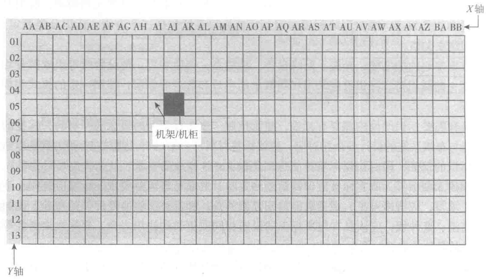

针式打印机。在布线系统中，常用的标签类型为激光 / 喷墨打印机标签和热敏打印机标签。
连接硬件的标签材料主要使用聚酯或聚烯烃。根据需要标识的硬件类型和要求，可以选择黏性标签或非黏性标签。
完成标识和标签之后，要对所有的管理设施建立文档。文档应采用计算机进行文档记录与保存，简单且规模较小的布线工程可按图纸资料等纸质文档进行管理，并做到记录准确、及时更新、便于查阅，文档资料应汉化。
7.5.10 标识设计
数据中心布线的系统化和管理是相当必要的。数千米的线缆在数据中心的机架和机柜间穿行，必须精确地记录和标注每段线缆、每个设备和每个机柜 / 机架。
在布线系统设计、实施、验收、管理等几个方面，定位和标识则是提高布线系统管理效率，避免系统混乱所必须考虑的因素，所以有必要将布线系统的标识当作管理的一个基础组成部分从布线系统设计阶段就予以统筹考虑，并在接下去的施工、测试和完成文档环节按规划统一实施，让标识信息有效地向下一个环节传递。
1. 机柜 / 机架标识
在数据中心中，机柜和机架的摆放和分布位置可根据架空地板的分格来布置和标识，依照 ANSI/TIA/EIA-606-A 标准，在数据机房中必须使用两个字母或两个阿拉伯数字来标识每一块 600mm×600mm 的架空地板。在数据中心计算机房平面上建立一个 XY 坐标系网格图，以字母标注 X 轴，以数字标注 Y 轴，确立坐标原点。机架与机柜的位置以其正面在网格图上的坐标标注如图 7-32 所示。
